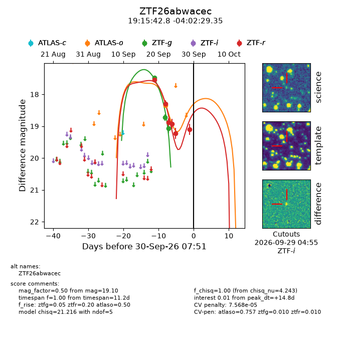
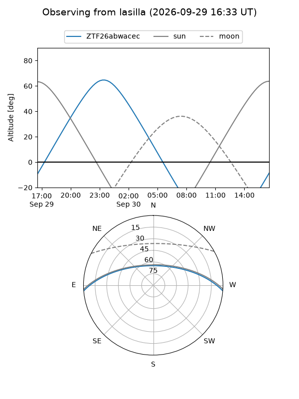
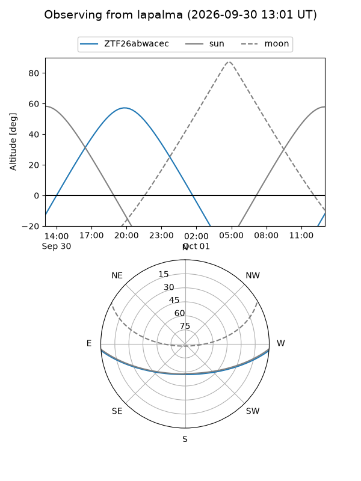
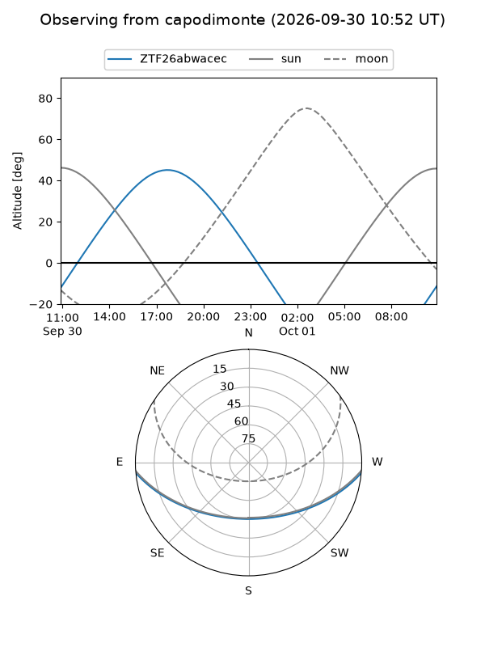
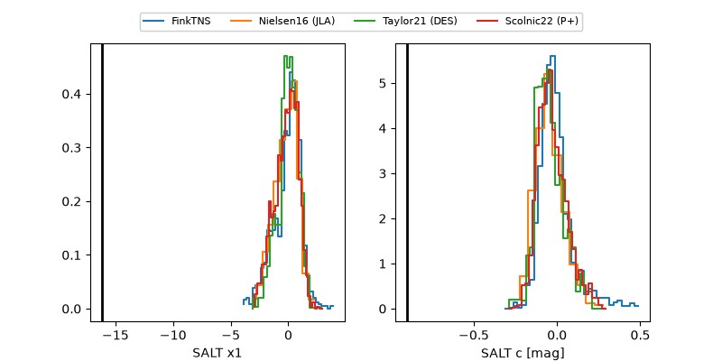

ZTF26abwacec
Target ZTF26abwacec at 2026-09-30 07:53
Aliases and brokers:
FINK-ZTF: ztf.fink-portal.org/ZTF26abwacec
Lasair-ZTF: lasair-ztf.lsst.ac.uk/objects/ZTF26abwacec
ALeRCE-ZTF: alerce.online/object/ZTF26abwacec
Direct TNS query: direct search
alt names
ZTF26abwacec (ztf,fink_ztf)
Coordinates:
equatorial (ra, dec) = 288.9282,-4.04149
equatorial (HMS+DMS) = 19:15:42.78,-04:02:29.35
galactic (l, b) = (32.0865,-7.23819)
Flags:
peak dt: +14.8
likely cv: !!
Photometry:
last atlaso=18.34, ztfg=19.08, ztfr=19.10
1 atlaso, 3 ztfg, 6 ztfr detections
Lightcurve

Visibility



Additional plots
